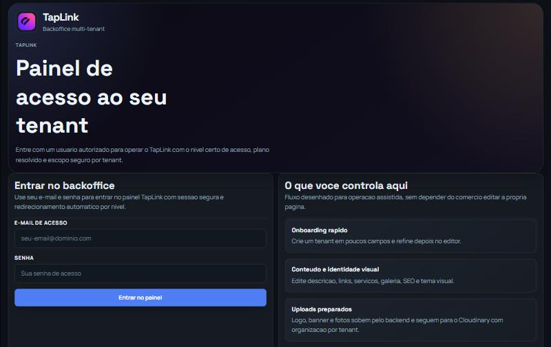
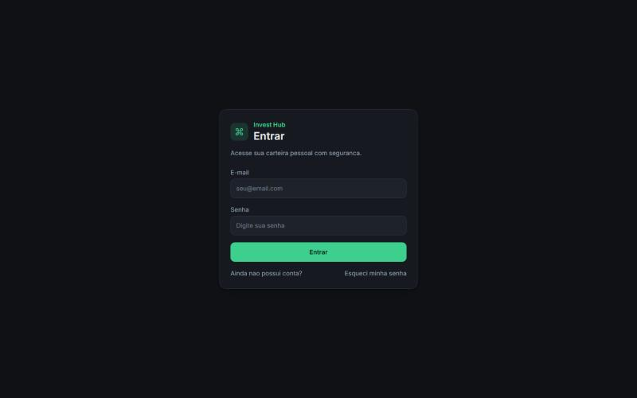

João Gabriel Caracato, dev front-end e técnico de redes
João Gabriel, 19 anos. Trabalho com a rede de uma provedora de internet e construo os sites, SaaS e automações que rodam em cima dela.
Café, rede e código.
Sou técnico em redes de computadores e trabalho numa provedora de internet, no suporte técnico, na conectividade e na infraestrutura.
No resto do tempo eu programo. Interfaces em React e Next.js, APIs em Node, bots de Discord, automações no n8n e o TapLink, o SaaS que é meu projeto principal. Gosto de entender o caminho inteiro: do servidor até o pixel.
Quando fecho o editor, provavelmente estou no Minecraft. Tanto que acabei montando um servidor inteiro.
O que eu uso
- Front-end
- HTML, CSS, JavaScript, TypeScript, React, Next.js, Vite, Tailwind, Bootstrap
- Back-end
- Node.js, Express, MongoDB, PostgreSQL, Python
- Automação
- n8n, webhooks, bots de WhatsApp e Discord, IA no meio do fluxo
- Rede e deploy
- Suporte de provedora, conectividade, Vercel, Cloudflare, GitHub
Já está no ar.
Projeto de verdade, com usuário de verdade, ou no mínimo com commit de verdade. Passe o mouse para espiar.
-
TapLink
SaaS · meu projeto principal
Plataforma multi-tenant: cada negócio ganha uma página própria com catálogo, pedidos, agendamentos e fidelidade. No backoffice dá pra criar o negócio em poucos campos e editar identidade visual, links, galeria e SEO.

-
InvestHub
Finanças pessoais
Dashboard pra organizar carteira, investimentos e o mês. Tem IA no meio e conversa pelo WhatsApp através do n8n. React, Vite e Tailwind no front; Express e MongoDB atrás.

-
Kagetsu
Bot de Discord
Bot multi-servidor com painel web: XP por chat e voz, cargos por nível, tickets, moderação, sorteios e mensagens agendadas. Next.js, Express e PostgreSQL.
-
ShinobiCraft
Servidor de Minecraft
Servidor modado com launcher próprio e painel de administração. Ganhou uma seção só pra ele logo abaixo.
-
AutoWhats
Automação
Automação de WhatsApp em Python pra tirar tarefa repetitiva do caminho.
-
ElloFiscal
Projeto acadêmico
Plataforma pra automatizar a gestão fiscal de pequenas empresas: notas fiscais, tributos e organização financeira.
-
Controle Financeiro 2.0
Finanças
Sistema pra registrar despesas e acompanhar as movimentações do mês.
Meu jogo virou servidor.
Minecraft é meu jogo favorito, então fiz o ShinobiCraft: um servidor modado em Forge 1.20.1, com 36 mods.
- Launcher próprio em Electron, baseado no Helios. Baixa, confere e atualiza tudo sozinho; o jogador não instala mod nenhum na mão.
- Distribuição pela Cloudflare R2, com mais de 300 arquivos sincronizados a cada atualização.
- Painel admin em Next.js com login em duas etapas, que mostra jogadores, TPS, backups e a saúde das automações do n8n.
Segure o clique pra minerar, igual no jogo.
Blocos minerados: 0
Repetiu? Vira fluxo.
Uso o n8n pra ligar sistema com sistema: webhooks, agendamentos, mensagens e IA no meio do caminho.
Quando o fluxo pede código, eu escrevo: o AutoWhats é em Python, e o Kagetsu tem os próprios jobs agendados. A regra é simples: se eu fiz a mesma coisa duas vezes, a terceira é de um robô.
- GatilhoMensagem no WhatsApp
- n8nWebhook recebe
- IAEntende o pedido
- APIGrava no InvestHub
- SaídaResponde no WhatsApp
Medi sua conexão.
Na provedora, meu dia é o que acontece entre o clique e a página aparecer.
DNS, handshake, TLS, latência. Os números ao lado não são enfeite: o seu navegador mediu agora, no caminho até o GitHub Pages, que serve este site.
Sua conexão até aqui
Medindo…
Seis pacotes, ida e volta.
Bora conversar?
Freela, vaga, ideia de projeto ou só trocar ideia sobre servidor de Minecraft. Respondo rápido.
joaogabrielcaracato